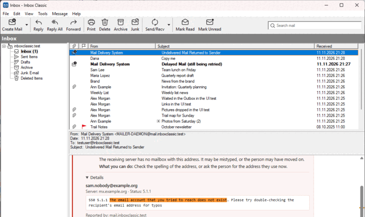

Meddelelser, der ikke blev leveret
Inbox Classic forklarer genkendte beskeder om mislykket eller forsinket levering og foreslår, hvad du kan gøre.
En genkendt leveringsbesked markeres med et særligt ikon på meddelelseslisten. Når du åbner den, viser et kort øverst, om din meddelelse ikke blev leveret eller kun er forsinket.

Kortet forklarer årsagen for hver modtager i et enkelt sprog og foreslår, hvad du kan gøre. Detaljer viser serverens oprindelige fejlbesked.
- Vis den meddelelse, der kom retur markerer den oprindelige meddelelse, hvis den kan findes.
- Ved en forsinkelse markerer Vis den forsinkede meddelelse den, hvis den kan findes. En forsinkelsesbesked betyder normalt, at serveren vil prøve igen; undgå at sende en dublet, før du ved, om leveringen er opgivet.
Almindelige årsager og råd ved en endelig leveringsfejl. Hvis leveringen kun er forsinket, skal du afvente resultatet, før du sender igen:
| Besked på kortet | Det kan du gøre |
|---|---|
| Adressen findes ikke | Kontrollér stavningen af adressen, eller spørg personen, hvilken adresse de bruger nu. |
| Postkassen er fuld | Kontakt modtageren på en anden måde, og bed om, at der bliver frigjort plads, før du prøver igen. |
| Afvist som spam | Læs serverens forklaring. Hvis indholdet blev afvist, skal du rette meddelelsen, før du prøver igen. |
| Din mailserver er på en blokeringsliste | Videresend beskeden til din mailudbyder. Ifølge beskeden er den afsendende servers adresse blokeret. |
| Levering midlertidigt udsat | Serveren prøver ofte igen efter en midlertidig afvisning. Hvis beskeden angiver en endelig fejl, skal du selv prøve at sende igen senere. |
Søg efter is:bounce for at finde alle leveringsbeskeder. Forklaringen udarbejdes lokalt på din computer. Meddelelsen sendes ikke til en ekstern tjeneste til analyse.